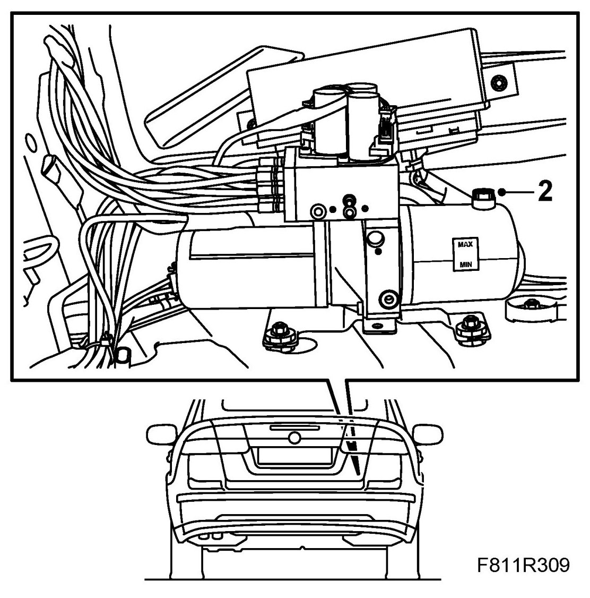
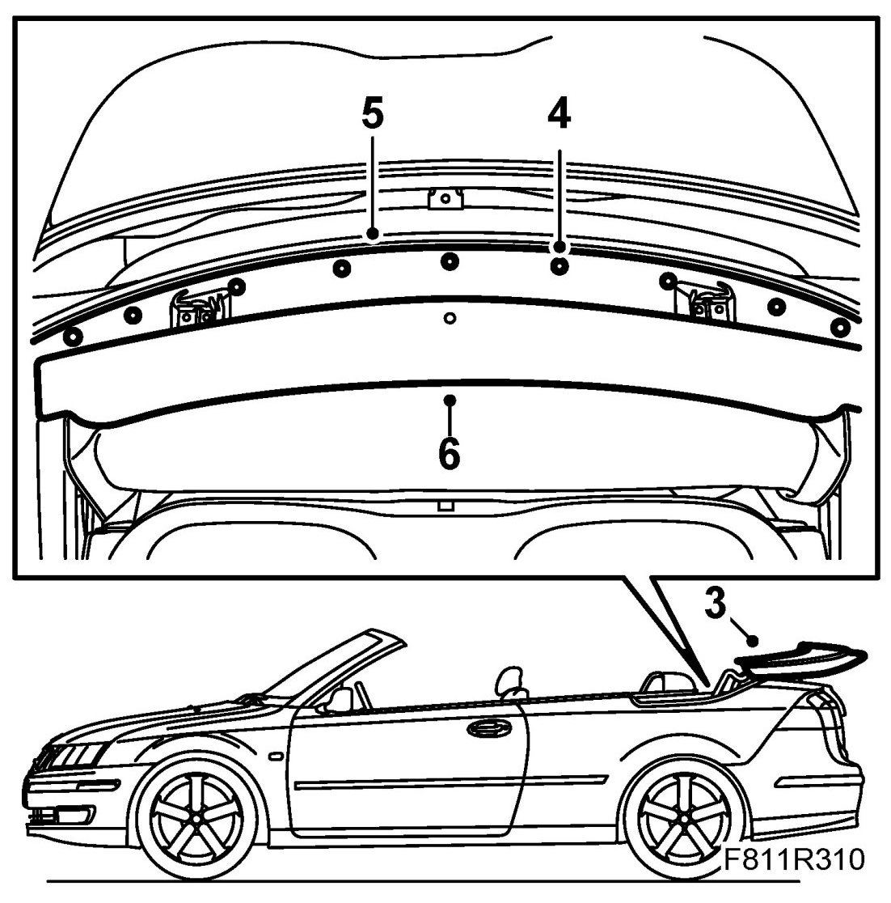
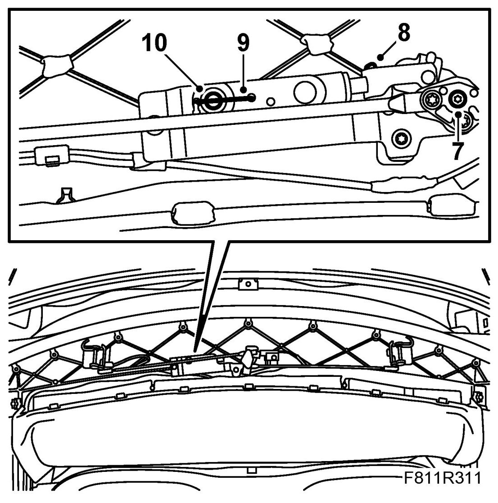
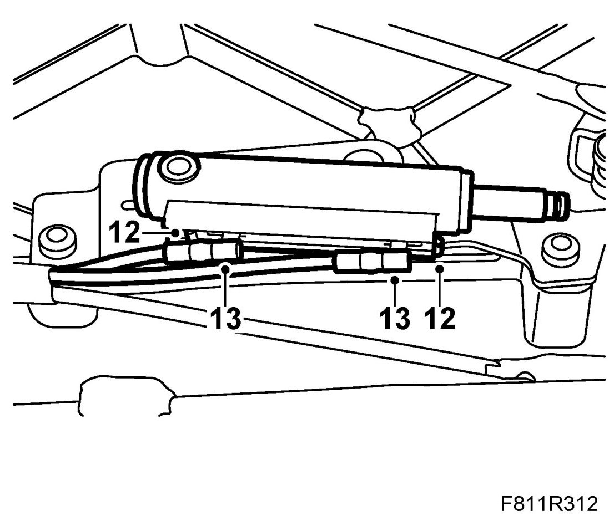
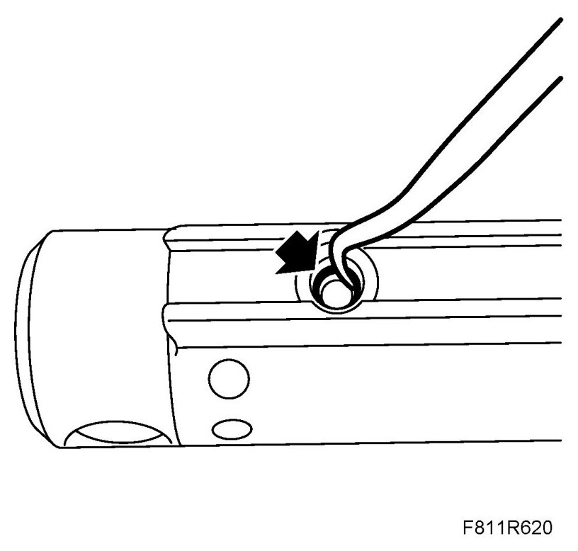
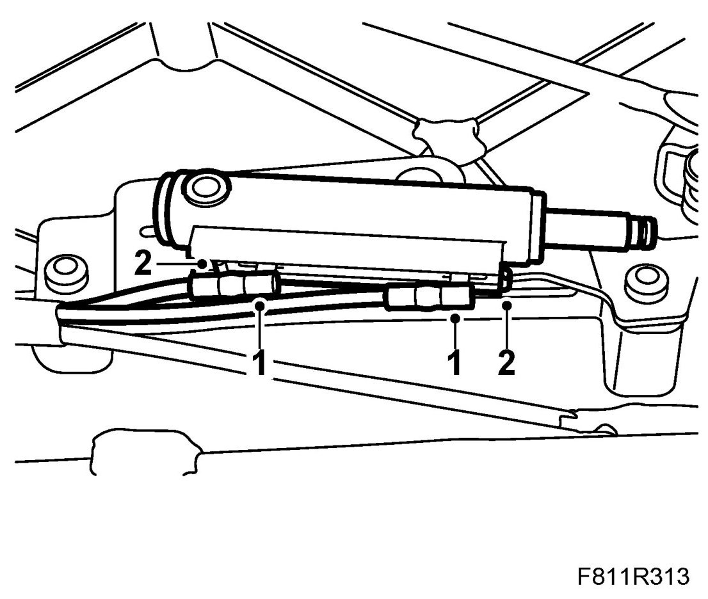
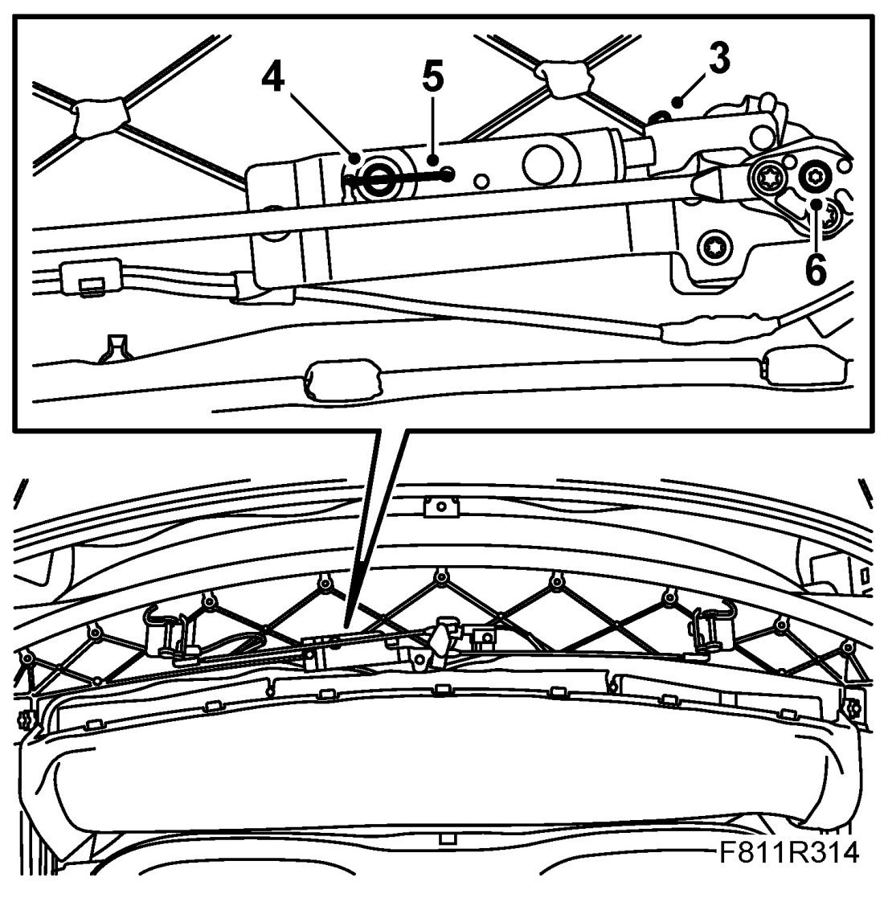

Hydraulic Cylinder For Locking First Bow
Hydraulic Cylinder For Locking First Bow
Removing
1. Remove Luggage compartment side trim, CV (right-hand side only).
2. Remove the fluid filler plug from the hydraulic system reservoir (to equalise the pressure). Refit the plug.

3. Open the soft top and leave the soft top cover up.

4. Remove the cover plate clip.
5. Remove the cover plate.
6. Remove the cover by pulling it backwards.
7. Turn the lock hook so that the cable lock and the hydraulic cylinder fastening pin are accessible.

8. Remove the clip for the hydraulic cylinder piston rod.
9. Unhook the wire clip from the fastening pin.
10. Pull out the fastening pin for the hydraulic cylinder.
11. Place some paper under the hydraulic cylinder to catch any hydraulic fluid that may run out. Take the hydraulic cylinder out of the holder so that it is easier to access the hydraulic line connections.
12. Remove the hydraulic line retaining clips by pulling them out.

13. Pull out the hydraulic lines from the hydraulic cylinder and remove the hydraulic cylinder.
Fitting
1. Remove the O-rings of the hydraulic cylinder using a blunt tool. Check the Orings and replace as necessary. Then fit the O-rings on the hydraulic lines before refitting the lines on the hydraulic cylinder. Use only one O-ring per hydraulic line.

Attach the hydraulic lines to the hydraulic cylinder by pressing them in. Be careful not to damage the O-ring.

2. Fit the hydraulic line clips.
3. Put the hydraulic cylinder in mounting position. Fit the clip to the hydraulic cylinder piston rod.

4. Fit the fastening pin to the hydraulic cylinder.
5. Fit the cable lock to the fastening pin.
6. Turn the lock hooks to open them.
7. Open and close the soft top for 5 complete cycles to bleed the system and check its function.
8. Check the oil level and top up as necessary. See Checking/filling oil.
9. Fit Luggage compartment side trim, CV.
10. Open the soft top again and leave the soft top cover open.
11. Fit the cover.
12. Put the cover plate in mounting position.
13. Fit the cover plate clips (9 off).
14. Close the soft top completely.
15. Connect the diagnostics tool and erase any diagnostic trouble code.